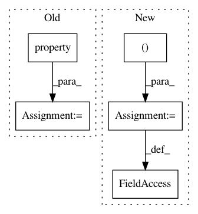

c2aabe9d86e667579f7c87be54d2894e9acb10e6,lib/matplotlib/transforms.py,BboxBase,BboxBase_3,#,292
Before Change
def _get_x0(self):
return self.get_points()[0, 0]
x0 = property(_get_x0, None, None,
(property) :attr:`x0` is the first of the pair of *x* coordinates that
define the bounding box. :attr:`x0` is not guaranteed to be
less than :attr:`x1`. If you require that, use :attr:`xmin`.)
def _get_y0(self):
return self.get_points()[0, 1]
y0 = property(_get_y0, None, None,
After Change
return self.transformed(transform.inverted())
coefs = {"C": (0.5, 0.5),
"SW": (0, 0),
"S": (0.5, 0),
"SE": (1.0, 0),
"E": (1.0, 0.5),
"NE": (1.0, 1.0),
"N": (0.5, 1.0),
"NW": (0, 1.0),
"W": (0, 0.5)}
def anchored(self, c, container=None):
Return a copy of the :class:`Bbox`, shifted to position *c*
In pattern: SUPERPATTERN
Frequency: 3
Non-data size: 5
Instances
Project Name: matplotlib/matplotlib
Commit Name: c2aabe9d86e667579f7c87be54d2894e9acb10e6
Time: 2017-02-20
Author: anntzer.lee@gmail.com
File Name: lib/matplotlib/transforms.py
Class Name: BboxBase
Method Name: BboxBase_3
Project Name: matplotlib/matplotlib
Commit Name: 5458d4ea76369571912346689a10c4621dcdb63d
Time: 2018-02-05
Author: quantum.analyst@gmail.com
File Name: lib/mpl_toolkits/axisartist/axis_artist.py
Class Name: AxisArtist
Method Name: AxisArtist_2
Project Name: pymc-devs/pymc3
Commit Name: 8df47901fbae1c93bcec58a9a658a6a3ad9f5d07
Time: 2017-09-02
Author: maxim.v.kochurov@gmail.com
File Name: pymc3/variational/flows.py
Class Name: LinearFlow
Method Name: LinearFlow_1